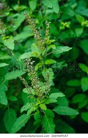
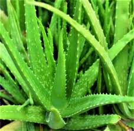
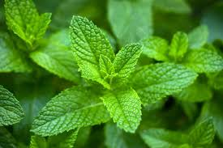
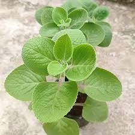
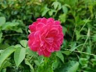
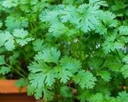
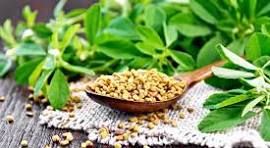
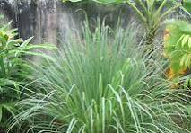

Tulsi (Holy Basil) is a sacred medicinal herb rich in antioxidants. It helps boost immunity and is used for cold, cough, and stress relief. Easy to grow with minimal care.
View details
Aloe Vera is a medicinal plant known for its soothing gel. It is widely used for skin care and healing purposes. Easy to grow and requires very little maintenance.
View detailsNeem is a powerful herbal plant with strong medicinal value. It has antibacterial and antifungal properties. Commonly used for skin care and natural remedies
View details
Mint is a refreshing herb with a cooling effect. It is commonly used in food and herbal drinks. Helps improve digestion and freshens breath.
View details
Indian Borage is a traditional medicinal herb used at home. It is effective in treating cough and cold. Also helps in improving digestion naturally
View details
Rose is a beautiful flowering plant with many uses. It is used in skincare and natural remedies. Helps improve skin health and reduce stress.
View detailsCurry leaves are widely used in Indian cooking. They are rich in nutrients and good for health. Helps improve digestion and hair health.
View details
Coriander is a popular herb used in cooking and medicine. It has a fresh aroma and cooling effect. Helps in digestion and detoxification.
View detailsHibiscus is a flowering plant used in hair care. It is rich in nutrients and antioxidants. Helps promote hair growth.
View details
Fenugreek is a herbal plant used in cooking and medicine. Its seeds and leaves have many health benefits. Helps control sugar levels and improve digestion.
View details
Ginger is a medicinal root used in daily life. It is commonly used in tea and remedies. Helps reduce cold and cough. Improves digestion. Easy to use every day.
View details
Lemongrass is a fragrant herb used in tea and cooking. It has a fresh lemon-like aroma. Helps reduce stress and improve digestion.
View details